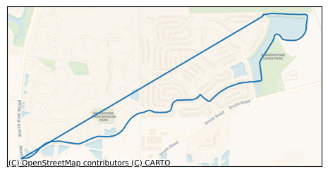
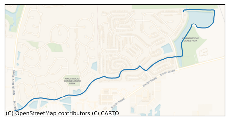
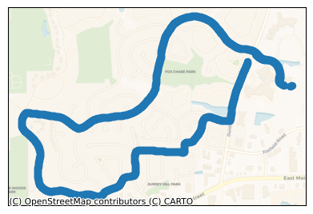
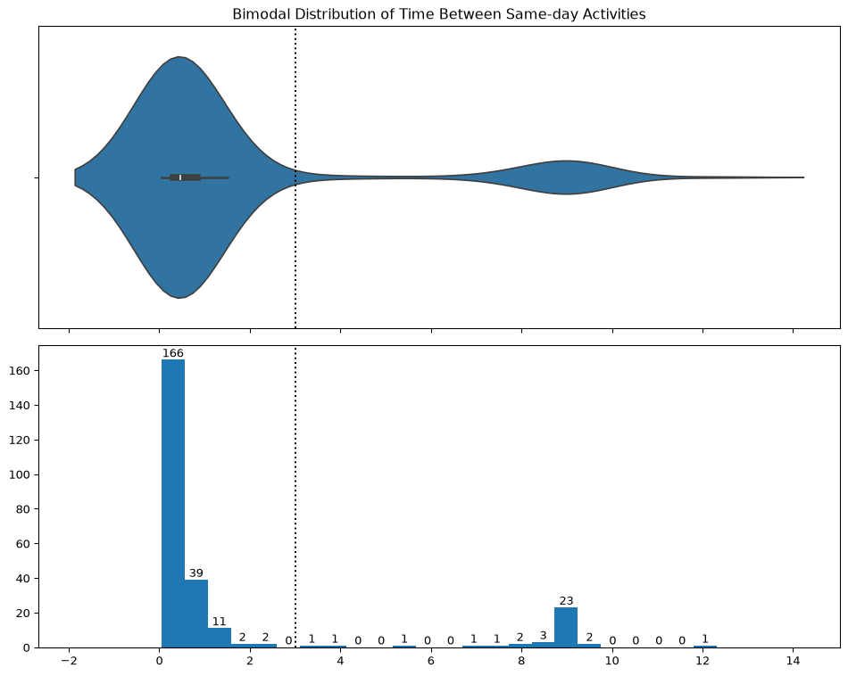
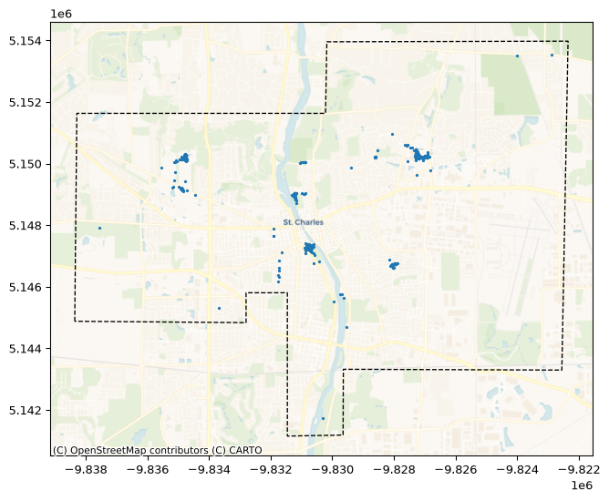
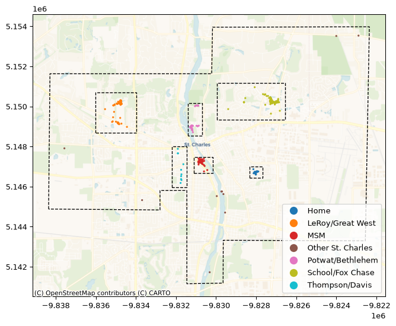
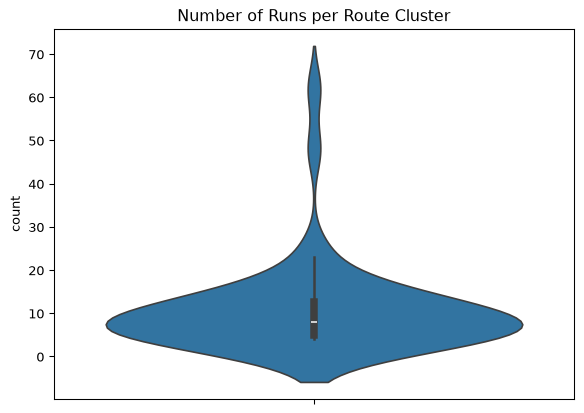
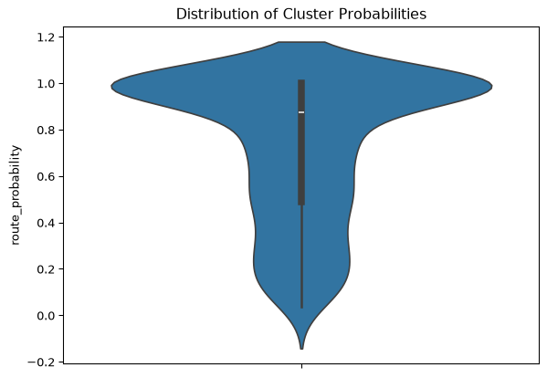
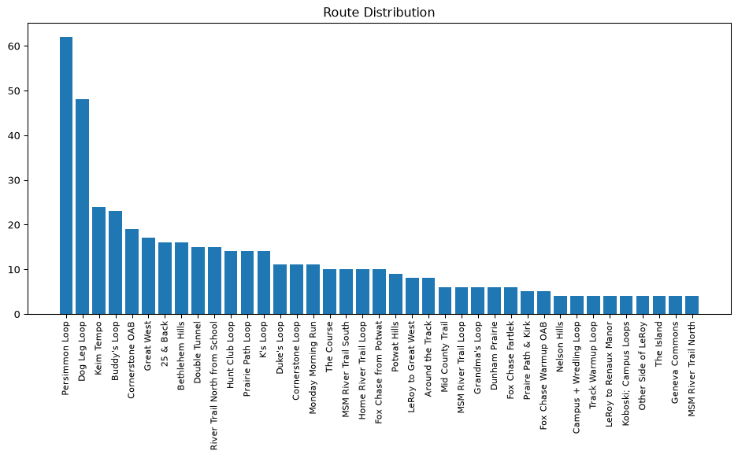

I ran cross country and track all four years that I was in high school, and I recorded every single run on my Apple Watch. I believe that this is a very unique trove of data that has the potential to be very interesting and very personal.
I obtained the raw data by exporting my Apple Health data. This export gave me a 2.23 GB .xml file and a folder containing 1,232 .gpx files.
I have constructed this document to explain each decision I made while working with this data and present the results. My work on this project was very nonlinear and experimental, as is anything that is being figured out for the first time, so please be aware that I have taken my final process and presented it in a logical and linear order here. Note that not all of the code is visible, and that the code that is made visible is meant to illustrate the processes.
1.1 Goals
Learn how to work with geospatial data and tools:
Learn how to manipulate geospatial data with the geopandas library.
Learn how to create effective visualizations of geospatial data.
Develop a data pipeline to ingest the raw data and output a processed dataset ready for analysis and visualization:
Use machine learning techniques to perform route geoclustering and route decomposition.
Categorize runs into specific types (e.g., workouts, long runs, normal runs).
Thoroughly document every decision and assumption made while processing the data.
Analyze the data to create visually appealing and informative maps and charts:
Understand the geographic distribution of my runs.
Understand my training regimen and how it evolved over time.
Understand how I improved over my four years.
2. Data Cleaning
The raw data must be converted into a convenient form, have certain constraints applied, and new features derived. As shown above, the raw data is spread across several different sources which must be integrated together.
2.1 GPX File List
The first piece of this puzzle is to assemble a list of all the GPX files. I will start by obtaining all of the filepaths.
Here are the filepaths:
track_file
540
/Users/ryansponzilli/Developer/Python Projects...
12
/Users/ryansponzilli/Developer/Python Projects...
166
/Users/ryansponzilli/Developer/Python Projects...
Dataframe Length: 1232 Rows
Example file name: route_2020-10-06_3.55pm.gpx
Each file name contains a date and time (referred to as a datetime). This datetime corresponds to the creation of the file. This is an important piece of information, so I will extract it from the file name and put it in its own column. It will also be useful to have a column with the date only.
The next thing I want to do is to filter for only the runs that occurred while I was in high school. Additionally, I want to bucket the runs into each year of high school and each season of the year. To do this, I went back into my calendar and manually created a table with the necessary information.
Minimum Date: 2019-06-10 00:00:00-05:00
Maximum Date 2023-05-16 00:00:00-05:00
Year and Seasons Buckets:
year
season
start_date
end_date
0
Freshman
Summer Training
2019-06-10 00:00:00-05:00
2019-08-12 00:00:00-05:00
1
Freshman
XC Season
2019-08-12 00:00:00-05:00
2019-11-08 00:00:00-06:00
2
Freshman
Winter Training
2019-11-08 00:00:00-06:00
2020-01-27 00:00:00-06:00
3
Freshman
Track Season
2020-01-27 00:00:00-06:00
2020-05-02 00:00:00-05:00
4
Sophomore
Summer Training
2020-05-02 00:00:00-05:00
2020-08-10 00:00:00-05:00
5
Sophomore
XC Season
2020-08-10 00:00:00-05:00
2020-10-19 00:00:00-05:00
6
Sophomore
Winter Training
2020-10-19 00:00:00-05:00
2021-04-05 00:00:00-05:00
7
Sophomore
Track Season
2021-04-05 00:00:00-05:00
2021-06-10 00:00:00-05:00
8
Junior
Summer Training
2021-06-10 00:00:00-05:00
2021-08-09 00:00:00-05:00
9
Junior
XC Season
2021-08-09 00:00:00-05:00
2021-10-25 00:00:00-05:00
10
Junior
Winter Training
2021-10-25 00:00:00-05:00
2022-01-31 00:00:00-06:00
11
Junior
Track Season
2022-01-31 00:00:00-06:00
2022-04-28 00:00:00-05:00
12
Senior
Summer Training
2022-04-28 00:00:00-05:00
2022-08-08 00:00:00-05:00
13
Senior
XC Season
2022-08-08 00:00:00-05:00
2022-11-06 00:00:00-05:00
14
Senior
Winter Training
2022-11-06 00:00:00-05:00
2023-01-30 00:00:00-06:00
15
Senior
Track Season
2023-01-30 00:00:00-06:00
2023-05-16 00:00:00-05:00
Now I will apply the minimum and maximum date constraints, and apply the bucketing.
The .xml file contains a Workout tag, which contains a data record for individual workouts. Not much useful information is provided in these records, just dates, a duration, and the type of activity. The type of activity is the most important field. Since the GPX tracks do not specify what activity they contain, I will need to link them to these records to identifiy which ones correspond to runs, and not to walks, bike rides, or hikes.
Sample of 3 "Workout" records:
workoutActivityType
duration
durationUnit
sourceName
sourceVersion
creationDate
startDate
endDate
device
493
HKWorkoutActivityTypeRunning
33.59381518562635
min
Ryan’s Apple Watch
7.0
2020-10-06 14:56:21 -0600
2020-10-06 14:21:07 -0600
2020-10-06 14:56:20 -0600
<<HKDevice: 0x3000bfb60>, name:Apple Watch, ma...
1153
HKWorkoutActivityTypeRunning
23.96332698464393
min
Ryan’s Apple Watch
9.0
2022-11-04 14:17:10 -0600
2022-11-04 12:05:13 -0600
2022-11-04 12:34:28 -0600
<<HKDevice: 0x3003d7430>, name:Apple Watch, ma...
285
HKWorkoutActivityTypeCycling
45.00715383291244
min
Ryan’s Apple Watch
6.1.2
2020-02-18 15:53:09 -0600
2020-02-18 15:07:50 -0600
2020-02-18 15:53:08 -0600
<<HKDevice: 0x30005ff20>, name:Apple Watch, ma...
Dataframe Length: 1460 Rows
To separate runs from hikes, walks, and bike rides, I need to cross reference each GPX file with its corresponding entry in the “Workouts” table from the .xml file. I will go ahead and filter the time period to the minimum and maximum dates. I also want to select only workouts that came from my Apple Watch. I need to exclude any Strava runs since I do not have any GPX files associated with them.
Both tables are prepared, but there is one obstacle remaining to merging them together. The track_file_datetime column in the GPX file dataframe refers to a creation time, so in the merge, we will reference this column to the creation_datetime column in the Workouts dataframe. However, due to whatever reason, these datetimes will not line up identically, they may be offset by several seconds or minutes. To fix this, I will iterate through each track_file_datetime in the GPX track dataframe and locate the closest match in the Workouts dataframe, and store this value in a new temporary column. Then I will merge on this temporary column, and drop any rows that are not running workouts.
Merged Dataframes:
track_file
track_file_datetime
track_file_date
day_of_week
year
season
0
/Users/ryansponzilli/Developer/Python Projects...
2019-06-10 07:46:00-05:00
2019-06-10
Monday
Freshman
Summer Training
1
/Users/ryansponzilli/Developer/Python Projects...
2019-06-11 07:32:00-05:00
2019-06-11
Tuesday
Freshman
Summer Training
2
/Users/ryansponzilli/Developer/Python Projects...
2019-06-12 07:35:00-05:00
2019-06-12
Wednesday
Freshman
Summer Training
Dataframe Length: 1033 Rows
Notice that we dropped from 1268 rows to 1033 rows. We have successfully removed all of the non-running GPX tracks from the dataframe.
2.4 GPX Track Data Extraction
Now that we have a clean dataset containing all of the runs, it’s time to look inside the GPX files themselves. For each GPX file, the data points are a time series sampled once per second where each timestamp has an associated latitude/longitude coordinate pair and an elevation. We can extract a lot of information from just this information.
A single .gpx file can contain multiple data layers:
GPX File Layers:
name
geometry_type
0
waypoints
Point
1
routes
LineString
2
tracks
MultiLineString
3
route_points
Point
4
track_points
Point
However, only two of the layers contain any data. These are the tracks layer and the track_points layer. I can load these individually using geopandas.read_file(). Most of the columns do not contain any data, but what really matters is the geometry column.
"tracks" Layer:
name
cmt
desc
src
link1_href
link1_text
link1_type
link2_href
link2_text
link2_type
number
type
geometry
0
Route 2020-10-06 3:55pm
None
None
None
None
None
None
None
None
None
NaN
None
MULTILINESTRING ((-88.27857 41.92811, -88.2786...
"track_points" Layer:
track_fid
track_seg_id
track_seg_point_id
ele
time
magvar
geoidheight
name
cmt
desc
...
sym
type
fix
sat
hdop
vdop
pdop
ageofdgpsdata
dgpsid
geometry
0
0
0
0
241.046722
2020-10-06 20:21:07+00:00
NaN
NaN
None
None
None
...
None
None
None
NaN
NaN
NaN
NaN
NaN
NaN
POINT (-88.27857 41.92811)
1
0
0
1
240.653961
2020-10-06 20:21:07+00:00
NaN
NaN
None
None
None
...
None
None
None
NaN
NaN
NaN
NaN
NaN
NaN
POINT (-88.27862 41.9281)
2
0
0
2
240.572311
2020-10-06 20:21:08+00:00
NaN
NaN
None
None
None
...
None
None
None
NaN
NaN
NaN
NaN
NaN
NaN
POINT (-88.27863 41.9281)
3 rows × 27 columns
Dataframe Length: 2007 Rows
The track_points layer is more useful, since it provides a more granular representation of the data. For each point, it gives a coordinate, timestamp, and elevation. These can be used to derive statistics such as elapsed distance, running pace, elevation change, and later, for route geoclustering.
The track points plotted on a map:
Before we get into detecting pauses and deriving statistics, I will properly parse the track_points dataframe and extract two helper columns, dt and dx, describing the change in time and position, respectively, from one track point to the next.
Before I can extract summary statistics, it is necessary to account for gaps in the data which can distort the statistics. Many runs contain pauses, where I manually paused the run to wait to cross the street, take a break, or for a rest between workout segments. In some cases, the pause may be extra long because I forgot to resume the run.
Left as-is, these pauses will result in calculating incorrect statistics like duration, distance, and pace. These also cause the map plots to interpolate the track line over the gap which looks funny and does not accurately reflect the run.
Pauses lead to misleading maps like this one where I forgot to unpause the run:

Detecting pauses and splitting the track into segments will yield a more accurate plot:

Each run is nominally sampled every second, so pauses can be detected by any gaps in the time series greater than 1 second. To be on the safe side, I will use a gap threshold of 5 seconds.
These are the required steps:
Locate indices of time-pauses in each run, with threshold of 5 seconds.
Split the data into segments along the located indices by creating an indicator column.
Remove segments less than 10 seconds, since these are mistakes with no meaningful value.
The rest of this section will continue using this track as an example:

# split into segments at pause indicespause_idx =list(gdf.loc[gdf['dt'] > timedelta(seconds=1)].index)gdf['pause_segment'] =Nonesegment_idx = ([0] + pause_idx + [len(gdf)])for i inrange(len(segment_idx) -1): gdf.loc[segment_idx[i]:segment_idx[i+1], 'pause_segment'] = i# remove segments less than 10 secondsgdf = gdf.groupby("pause_segment", group_keys=False).filter(lambda x: len(x) >10)
datetime
elevation
geometry
dt
dx
pause_segment
203
2020-10-06 20:24:40+00:00
235.287811
POINT (-88.28524 41.93162)
0 days 00:00:01
3.376315
2
466
2020-10-06 20:29:03+00:00
239.277939
POINT (-88.29182 41.92984)
0 days 00:00:01
3.346937
2
783
2020-10-06 20:34:20+00:00
235.135971
POINT (-88.301 41.92548)
0 days 00:00:01
3.322182
2
1269
2020-10-06 20:42:26+00:00
234.282379
POINT (-88.29727 41.92022)
0 days 00:00:01
2.730437
2
1372
2020-10-06 20:44:09+00:00
235.060013
POINT (-88.29419 41.92174)
0 days 00:00:01
2.795826
2
Number of Pauses Detected: 3
2.4.2 Rolling Pace
Before moving on to calculating summary statistics, I need to create a column for the current pace. The pace is my speed, usually measured in minutes per mile, so it is calculated by dt / dx. To calculate the pace, I will use a rolling average from the last 10 seconds, and importantly doing this separately within each pause segment. A side effect of using a rolling window of 10 seconds is that you cannot calculate it for the first 10 seconds, so we fill simply backfill the pace for the first 10 seconds.
# calculate pace for each pause segment separatelydef calculate_rolling_pace(gdf):# use a 10 second rolling window for calculating pace gdf["pace (min/mi)"] = (gdf["dt"].cumsum().dt.total_seconds() /60).diff(10) / (gdf["dx"].cumsum() /1609).diff(10)# backfill nans that resulted from the rolling window gdf["pace (min/mi)"] = gdf["pace (min/mi)"].bfill()return gdfgdf = gdf.groupby('pause_segment').apply(calculate_rolling_pace).reset_index().drop(columns=["level_1"], errors='ignore')
pause_segment
datetime
elevation
geometry
dt
dx
pace (min/mi)
205
2
2020-10-06 20:24:48+00:00
235.039536
POINT (-88.28542 41.93181)
0 days 00:00:01
3.091098
8.237627
525
2
2020-10-06 20:30:08+00:00
236.679855
POINT (-88.29227 41.92783)
0 days 00:00:01
3.186074
7.727025
552
2
2020-10-06 20:30:35+00:00
235.599152
POINT (-88.29286 41.92716)
0 days 00:00:01
3.727643
7.507989
835
2
2020-10-06 20:35:18+00:00
235.035980
POINT (-88.30312 41.92595)
0 days 00:00:01
3.281407
8.116815
1761
2
2020-10-06 20:50:44+00:00
234.579391
POINT (-88.28458 41.92655)
0 days 00:00:01
3.258455
8.247269
2.4.3 Summary Statistics
I would like to extract a few summary statistics from each run merge them into our master dataframe. These include:
start_point: the first point in the run.
end_point: the last point in the run.
start_datetime: the first timestamp in the run.
end_datetime: the last timestamp in the run.
num_pauses: the number of pauses, where a pause is defined as a gap greater than five seconds.
total_duration: the total time elapsed from starting the run to ending the run, including all pauses.
active_duration: the total time elapsed from starting the run to ending the run, excluding all pauses.
total_distance: the total distance run in miles, excluding distance covered during pauses.
average_pace: the average pace during the run.
total_ascent: the total elevation increase throughout the run.
total_descent: the total elevation decrease throughout the run.
track_line: A MultiLineString object containing LineStrings that represent each continous segment between pauses.
# calculate number of pauses, where a pause is defined as dt > 1 secondnum_pauses =len(gdf.loc[gdf['dt'] > timedelta(seconds=1)])# calculate the total duration, defined as the time between starting and ending the activitytotal_duration = gdf['dt'].sum()# calculate the active duration, defined as the total time minus any pausesactive_duration = gdf.loc[gdf['dt'] == timedelta(seconds=1), 'dt'].sum()# calculate total distance, excluding pausestotal_distance_miles = gdf.loc[(gdf['dt'] == timedelta(seconds=1)), 'dx'].sum() /1609# calculate average pace, exclude any pace over 10 min/mi since those are not representative of actual runningaverage_pace = gdf.loc[gdf["pace (min/mi)"] <10, "pace (min/mi)"].mean()# calculate total ascent, excluding pausestotal_ascent = gdf.loc[(gdf['dt'] == timedelta(seconds=1)), 'elevation'].diff().loc[gdf['elevation'].diff() >0].sum()# calculate total descent, excluding pausestotal_descent = gdf.loc[(gdf['dt'] == timedelta(seconds=1)), 'elevation'].diff().loc[gdf['elevation'].diff() <0].sum()# split each pause segment into a LineString within a MultiLineStringfixed_track_line = shapely.MultiLineString([shapely.LineString(group['geometry']) for _, group in gdf.groupby('pause_segment')])
Number of Pauses: 3
Total Duration: 0 days 00:33:33
Active Duration: 0 days 00:33:17
Total Distance (miles): 4.084091745774948
Average Pace (min/mi): 8.14015279647961
Total Ascent (m): 27.357408000000078
Total Descent (m): -30.719911000000053
Fixed Track Line:
Now I will apply these GPX data extraction steps to each GPX file, and add the resulting summary statistics and fixed track line to our master dataframe.
Updated Master Dataframe:
track_file
track_file_datetime
track_file_date
day_of_week
year
season
start_point
end_point
num_pauses
track_line
start_datetime
end_datetime
total_duration
active_duration
total_distance (mi)
average_pace (min/mi)
total_ascent (m)
total_descent (m)
38
/Users/ryansponzilli/Developer/Python Projects...
2019-08-15 15:50:00-05:00
2019-08-15
Thursday
Freshman
XC Season
POINT (-88.31505 41.92691)
POINT (-88.31236 41.92701)
2
MULTILINESTRING ((-88.31505 41.92691, -88.3150...
2019-08-15 20:42:22+00:00
2019-08-15 20:50:32+00:00
0 days 00:08:12
0 days 00:08:08
0.759894
9.471109
46.421234
-35.419540
62
/Users/ryansponzilli/Developer/Python Projects...
2019-09-03 16:19:00-05:00
2019-09-03
Tuesday
Freshman
XC Season
POINT (-88.26022 42.04407)
POINT (-88.26055 42.04394)
0
MULTILINESTRING ((-88.26022 42.04407, -88.2602...
2019-09-03 21:07:40+00:00
2019-09-03 21:19:22+00:00
0 days 00:11:42
0 days 00:11:42
1.168298
9.264211
35.742096
-34.954804
133
/Users/ryansponzilli/Developer/Python Projects...
2019-10-08 15:19:00-05:00
2019-10-08
Tuesday
Freshman
XC Season
POINT (-88.27902 41.9281)
POINT (-88.27984 41.92846)
2
MULTILINESTRING ((-88.27902 41.9281, -88.27898...
2019-10-08 20:05:49+00:00
2019-10-08 20:19:01+00:00
0 days 00:13:12
0 days 00:13:08
1.511644
8.661496
12.623263
-12.737383
402
/Users/ryansponzilli/Developer/Python Projects...
2020-11-20 15:39:00-06:00
2020-11-20
Friday
Sophomore
Winter Training
POINT (-88.34745 41.92782)
POINT (-88.35112 41.92999)
6
MULTILINESTRING ((-88.34745 41.92782, -88.3474...
2020-11-20 21:27:07+00:00
2020-11-20 21:34:13+00:00
0 days 00:06:57
0 days 00:04:57
0.300513
8.171979
5.094148
-14.293427
631
/Users/ryansponzilli/Developer/Python Projects...
2021-07-26 08:07:00-05:00
2021-07-26
Monday
Junior
Summer Training
POINT (-75.73682 36.1439)
POINT (-75.73725 36.14375)
10
MULTILINESTRING ((-75.73682 36.1439, -75.73686...
2021-07-26 12:25:04+00:00
2021-07-26 13:07:06+00:00
0 days 00:34:33
0 days 00:32:31
4.121371
7.836519
24.579375
-24.334962
637
/Users/ryansponzilli/Developer/Python Projects...
2021-08-03 07:33:00-05:00
2021-08-03
Tuesday
Junior
Summer Training
POINT (-88.34731 41.92731)
POINT (-88.34791 41.92777)
13
MULTILINESTRING ((-88.34731 41.92731, -88.3473...
2021-08-03 11:47:08+00:00
2021-08-03 12:33:08+00:00
0 days 00:34:01
0 days 00:22:50
2.898093
7.491536
53.802248
-55.950030
806
/Users/ryansponzilli/Developer/Python Projects...
2022-06-17 07:26:00-05:00
2022-06-17
Friday
Senior
Summer Training
POINT (-88.34819 41.92097)
POINT (-88.34783 41.92069)
3
MULTILINESTRING ((-88.34819 41.92097, -88.3482...
2022-06-17 11:46:49+00:00
2022-06-17 12:26:56+00:00
0 days 00:40:10
0 days 00:20:13
2.560334
7.324524
57.821575
-62.027798
848
/Users/ryansponzilli/Developer/Python Projects...
2022-09-10 07:50:00-05:00
2022-09-10
Saturday
Senior
XC Season
POINT (-88.05769 41.97184)
POINT (-88.05724 41.97182)
1
MULTILINESTRING ((-88.05769 41.97184, -88.0577...
2022-09-10 12:40:52+00:00
2022-09-10 12:50:49+00:00
0 days 00:10:01
0 days 00:09:57
1.227250
7.991828
16.696244
-15.215607
987
/Users/ryansponzilli/Developer/Python Projects...
2023-03-16 15:50:00-05:00
2023-03-16
Thursday
Senior
Track Season
POINT (-88.27986 41.92883)
POINT (-88.27977 41.92843)
5
MULTILINESTRING ((-88.27986 41.92883, -88.2798...
2023-03-16 20:22:38+00:00
2023-03-16 20:50:36+00:00
0 days 00:28:02
0 days 00:26:20
3.438203
7.606551
22.190808
-22.621379
1021
/Users/ryansponzilli/Developer/Python Projects...
2023-04-21 15:17:00-05:00
2023-04-21
Friday
Senior
Track Season
POINT (-88.27982 41.92866)
POINT (-88.27984 41.92845)
4
MULTILINESTRING ((-88.27982 41.92866, -88.2798...
2023-04-21 19:50:10+00:00
2023-04-21 20:17:23+00:00
0 days 00:27:13
0 days 00:26:35
3.446031
7.697736
20.714294
-20.489816
Dataframe Length: 1023 Rows
2.4.4 Activity Recombination
Sometimes, I chose to record a workout all in the same recorded activity, and other times I broke it into several recorded activities. To be able to effectively cluster routes, I need to standardize this. I am going to flatten all activities recorded on the same day into one workout entry with one combined GPX track. This will also fix any cases where I accidently ended an activity mid-run and had to start another. However, I will have to take special care to separate out doubles. During the season, we would run twice on some days, in the morning and the afternoon.
First, I will identify all dates with more than one recorded activity.
# isolate dates with multiple runs for further processingcounts = df_tracks[["track_file_date", "start_datetime"]].groupby("track_file_date").agg("count")multple_dates = counts.loc[counts["start_datetime"] >1].index# dataframe with single-run datesdf_tracks_singles = df_tracks.loc[~df_tracks['track_file_date'].isin(multple_dates)]# dataframe with multiple-run datesdf_tracks_multiples = df_tracks.loc[df_tracks['track_file_date'].isin(multple_dates)]
Next, I need to find a way to identify doubles. Let’s look at the distribution of the time between activities for all of the days with more than one recorded activity. To do this I will group all the workouts by their date and calculate the time between same-day workouts.

There is a excellently clear bimodal distribution. The mode around zero corresponds to the workout activities that should be aggregated together, and the mode around nine hours corresponds to doubles. I have marked three hours as an appropriate threshold. For the two activities just under 4 hours, I manually checked and they are doubles. Now, I will go through each date group, if there is a double, I will keep it separate, and then aggregate the other activities into one.
The vast majority of runs take place somewhere within St. Charles (there are some in other regions of the state and country from trips), and within St. Charles they form some natural clusters.

I identified six regions within St. Charles that are typical starting places for runs and added this variable to our master dataframe.

3. Route Clustering
Routes are segments of tracks that show up time and time again across the dataset. A single run may contain more than one route, since sometimes routes are chained together.
I am going to use an unsupervised machine learning model to identify runs that traverse the same route. From there, I will manually assign each route its name. Not every run will be a known route, sometimes a route was not run more than a once or twice.
The model needs to cluster routes based on the GPS trajectory. We need to coax the GPS trajectory into a set of feature variables. To do this, we are going to spatially index the trajectory using H3 cells. This maps each latitude/longitude coordinate pair onto a hexagonal grid, such that each coordinate pair returns a cell ID. There are several different grid resolutions, and 11 seems to work well, it corresponds to an edge length of 28 meters. This step converts our sequence of continuous coordinates into a sequence of discrete cells. The next step is to vectorize the sequence using term-frequency-inverse-document-frequency vectorization.
These steps are all wrapped inside of sci-kit learn pipelines and custom transformers. The final step is to run the clustering algorithm, HDBSCAN. Here is the architecture of the model:
Total Runs: 754
Number of Clusters: 48
Number of Unclustered Runs: 245
Mean Cluster Size: 10.83
Median Cluster Size: 8.0


I complied a report of the clustering into a PDF showing all the clusters and all the routes belonging to each cluster. I used this to manually label each route with its name, and then merged these names into our master dataframe.
Current Master Dataframe:
track_file
track_file_datetime
track_file_date
day_of_week
start_datetime
end_datetime
num_pauses
total_duration
active_duration
total_distance (mi)
...
total_descent (m)
year
season
region
start_point
end_point
track_line
route_probability
route_type
route_name
0
/Users/ryansponzilli/Developer/Python Projects...
2019-06-10 07:46:00-05:00
2019-06-10
Monday
2019-06-10 11:57:42+00:00
2019-06-10 12:46:10+00:00
0
0 days 00:48:28
0 days 00:48:28
3.060933
...
-38.079392
Freshman
Summer Training
Thompson/Davis
POINT (-88.32154 41.91101)
POINT (-88.32166 41.9109)
MULTILINESTRING ((-88.32154 41.91101, -88.3215...
0.000000
Unknown
Unknown
1
/Users/ryansponzilli/Developer/Python Projects...
2019-06-11 07:32:00-05:00
2019-06-11
Tuesday
2019-06-11 11:59:03+00:00
2019-06-11 12:32:23+00:00
5
0 days 00:33:20
0 days 00:33:10
3.154848
...
-61.285231
Freshman
Summer Training
LeRoy/Great West
POINT (-88.34764 41.928)
POINT (-88.34792 41.92783)
MULTILINESTRING ((-88.34764 41.928, -88.34764 ...
1.000000
Normal
Mid County Trail
2
/Users/ryansponzilli/Developer/Python Projects...
2019-06-12 07:35:00-05:00
2019-06-12
Wednesday
2019-06-12 11:53:36+00:00
2019-06-12 12:35:13+00:00
5
0 days 00:41:43
0 days 00:30:46
2.521019
...
-63.546495
Freshman
Summer Training
Thompson/Davis
POINT (-88.32153 41.91251)
POINT (-88.32172 41.911)
MULTILINESTRING ((-88.32153 41.91251, -88.3215...
0.000000
Unknown
Unknown
3
/Users/ryansponzilli/Developer/Python Projects...
2019-06-17 07:22:00-05:00
2019-06-17
Monday
2019-06-17 11:52:32+00:00
2019-06-17 12:22:32+00:00
0
0 days 00:30:00
0 days 00:30:00
2.981428
...
-42.863923
Freshman
Summer Training
Thompson/Davis
POINT (-88.32145 41.911)
POINT (-88.32154 41.91096)
MULTILINESTRING ((-88.32145 41.911, -88.32143 ...
0.000000
Unknown
Unknown
4
/Users/ryansponzilli/Developer/Python Projects...
2019-06-18 07:19:00-05:00
2019-06-18
Tuesday
2019-06-18 11:53:58+00:00
2019-06-18 12:19:21+00:00
3
0 days 00:25:23
0 days 00:25:03
2.343798
...
-46.531003
Freshman
Summer Training
LeRoy/Great West
POINT (-88.35416 41.92575)
POINT (-88.34797 41.92783)
MULTILINESTRING ((-88.35416 41.92575, -88.3541...
0.903103
Normal
The Course
5 rows × 22 columns
Dataframe Length: 803 Rows

4. Next Steps
My primary goal is to somehow use PyTorch to create a neural network that does something cool. I’m having trouble articulating exactly what I want the end results to look like, but I will try to outline some of what I am thinking.
One desire I have is to give every run a label based on what type of run it is, like Normal Run, Long Run, Tempo Workout, Track Workout, Hill Workout, or Fartlek Workout. This would probably be closely coupled with the route and I’m not sure how to approach that.
Right now, I have assigned route names based on the clustering results. Out of 803 total runs, the 754 that are located in St. Charles were put through the clustering model. 509 were given route labels, and 245 were labeled as unknown.
In addition to routes, I think it could be interesting to look at more specific route segments and identifying all the runs that contain a given segment. This would be a use for a Transformer-based deep model. I’m having trouble seeing what the data structure for this might look like.
The route framework has limitations too. Some runs are more adventurous, and do not follow the same exact trajectory, but may still be clustered in a certain region, like a park. This is sort of accounted for in the region variable I already have.
For runs that are workouts, the workout typically contains a warmup, one or more workout segments, and a cooldown. It would be interesting to be able to break these apart and look at specific workout stats, and also examine routes and segments for warmups, workouts, and cooldowns.
Route Decomposition GPS points │ ▼ H3 cells │ ▼ Embedding layer │ ▼ Transformer │ ▼ Segment label or unknown segment for each point, compressing duplicates │ │ ▼ ▼ Route Segments: S1 → S2 → S4 Route Segments: S1 → Unknown | │ ▼ ▼ Route lookup Region Clustering │ │ ▼ ▼ Route: Dog Leg Route: LeRoy Oakes